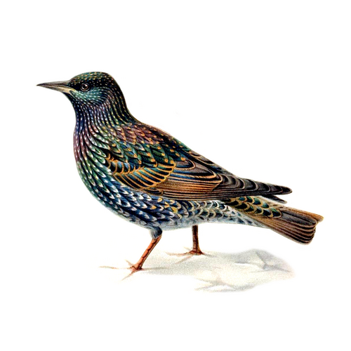

Zzyv Zzyzek

Hamiltonian s-t paths in solid grid graphs (2026)
|
demo
|
Palomar Lean Registry
Two-colour Zig-Zag Numberlink on rectangles (2026)
|
demo
|
(source)
Breakout Model Synthesis Article (Paged Out, 2025)
Punch Out Model Synthesis (2024)
|
(demo)
Punch Out Model Synthesis Paper (2024)
|
(source)
Demos
Hamiltonian Path on Solid Grid Graphs (2026)
Two Colour Zig Zag Numberlink (Two Colour Flow Free) (2026)
Punch Out Model Synthesis, Web App (2024)
Tile Rule Highlighter, Web App (2024)